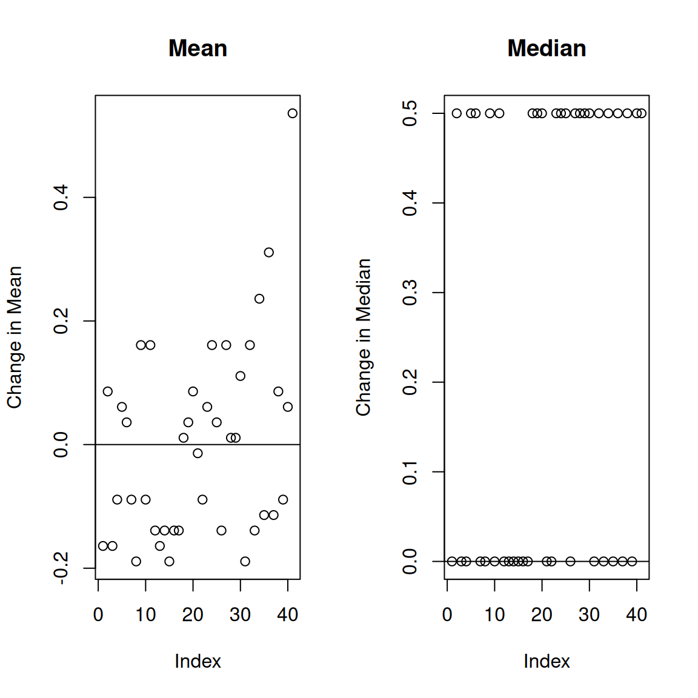
Robustness properties
Corresponding reading
Much of this material on robustness is not directly covered in either of the books. But there are some discussion of elements of this material in the books.
Robustness of location estimators:
- Chapter 10.4 in Rice (2006)
QQ-Plots:
Another way we can evaluate estimators is to consider their robustness. There are a lot of ways to define robustness. Generically, we think of robustness in terms of assumptions. We make a lot of assumptions when we
- define an estimator
- describe its properties
- construct confidence intervals
For all of these tasks, we are pointed toward what seems like the “right” way based on assumptions about the distribution of the data. We can then ask – would this still be a good idea if some of those assumptions weren’t true? The answer to this question is going to depend on the actual data, since all strategies will break if you push them hard enough.
When faced with actual data, there are two (interrelated) ways to approach this problem:
- Evaluate the assumptions on the data you have, perhaps identifying problematic observations and consider removing them.
- Use an estimation/inference procedure that is hard to break, i.e. robust (with the tradeoff that it might not perform as well if you actually are in the ideal setting)
The second approach brings us to thinking about robustness as a property of an estimator and how do we quantify if an estimator will perform well under adverse conditions?
A common way to think about this is to quantify how the value of the estimator changes if presented with data from a distribution that doesn’t match the assumptions. This is often done by considering a sensitivity analysis – how much can some “strange” data values or “outliers” disrupt the performance of the estimator. In machine learning, this perspective is often described as “adversarial”; in other words if you had an adversary intentionally corrupting your data, how well could your estimate still perform?
Sensitivity to a single point
One way to measure sensitivity to outliers is to consider, for the data you have now, how would your estimate change if you left out one data point?
We can consider this for fuel economy data from 1999-2008. Suppose we want to summarize the data – i.e. basically estimate the center of the distribution. We can consider two estimators the mean and the median and compare them.
We see that one point has a much larger effect on the mean than all of the other points, though since the mean is 25.075, the difference in the change of the mean is still ultimately not that large. Notice that this approach allows you to potentially identify unusual points in your dataset.
However, if we look at the median, we see there exactly zero change. Which makes sense, since the median will not care about where the extreme points in the distribution are.
Regression example
We can also consider our regression example, where one of our two datasets had a large outlier.
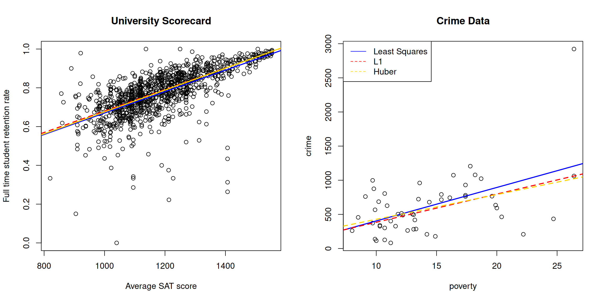
We can do the leave-one-out sensitivity analysis for this data, similarly.
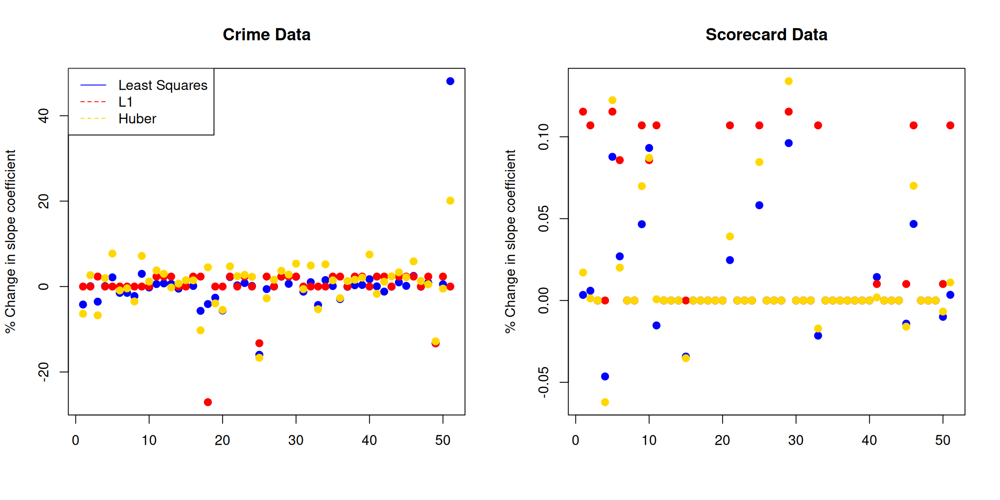
We can see that the regression context is more complicated, in the sense that even when we use \(L_1\) loss, like the median, we can see movement in the coefficients even by dropping a single point.
Sensitivity curve
In the above analysis, we are hyper-focused on the specific dataset and what are the effects of individual data points in datasets. We saw that when we compared our regression estimators on the university data, there was very little difference between the estimators, while on the crime data, there was a point that made a big difference and showed some of the estimators were far more sensitive to that point than others.
What if we want to say something about estimators in general? We’d like to “force” there to be an outlier, regardless of whether it occurred naturally in our data. For this, we can a similar idea about how sensitive the estimator is to a data point, but instead of being limited to data we have, we allow ourselves to force the dataset to have an outlying data point and let it be as big as we want.
Specifically, we ask what would happen if we added a \((n+1)\)th value \(x_0\) to our observed data \(x_1,\ldots,x_n\)?
Consider, for example, the mean \(\hat\mu(x_1,\ldots,x_n)=\bar{x}_n\). If we add \(x_0\) we get \[\hat\mu(x_1,\ldots,x_n,x_0)=\frac{1}{n+1}(\sum_{i=1}^nx_i +x_0)=\frac{n}{n+1}\bar{x}_n+\frac{x_0}{n+1}.\] So if we look at the difference, \[\hat\mu(x_1,\ldots,x_n,x_0)-\hat\mu(x_1,\ldots,x_n)=\frac{n}{n+1}\bar{x}_n+\frac{x_0}{n+1} - \bar{x}_n=\frac{1}{n+1}\bar{x}_n +\frac{x_0}{n+1}\] Notice that regardless of our specific observed data \(x_1,\ldots,x_n\), the change is going to be linear in \(x_0\).
We generally define the sensitivity curve as the difference divided by \(1/(n+1)\) (this is way of “normalizing” the result across different sized datasets): \[SC(x_0)=\frac{\hat\mu(x_1,\ldots,x_n,x_0)-\hat\mu(x_1,\ldots,x_n)=\frac{1}{n+1}\bar{x}_n +\frac{x_0}{n+1})}{1/n+1}\] For the mean, \(SC(x_0)=\bar{x}+x_0\).
Consider instead some another measures of location: the median and the “trimmed mean”. The trimmed mean is where we remove a certain proportion \(\eta\) from either end of our ordered data, and take the mean of what’s left. Both of these are estimates of the “center” of our data, and are considered robust estimates of the center. We would note that the median is an extreme example of the trimmed mean, with \(\eta=0.5\), i.e. removing all the data except the middle point.
We can plot the sensitivity curves for all three of these estimators:
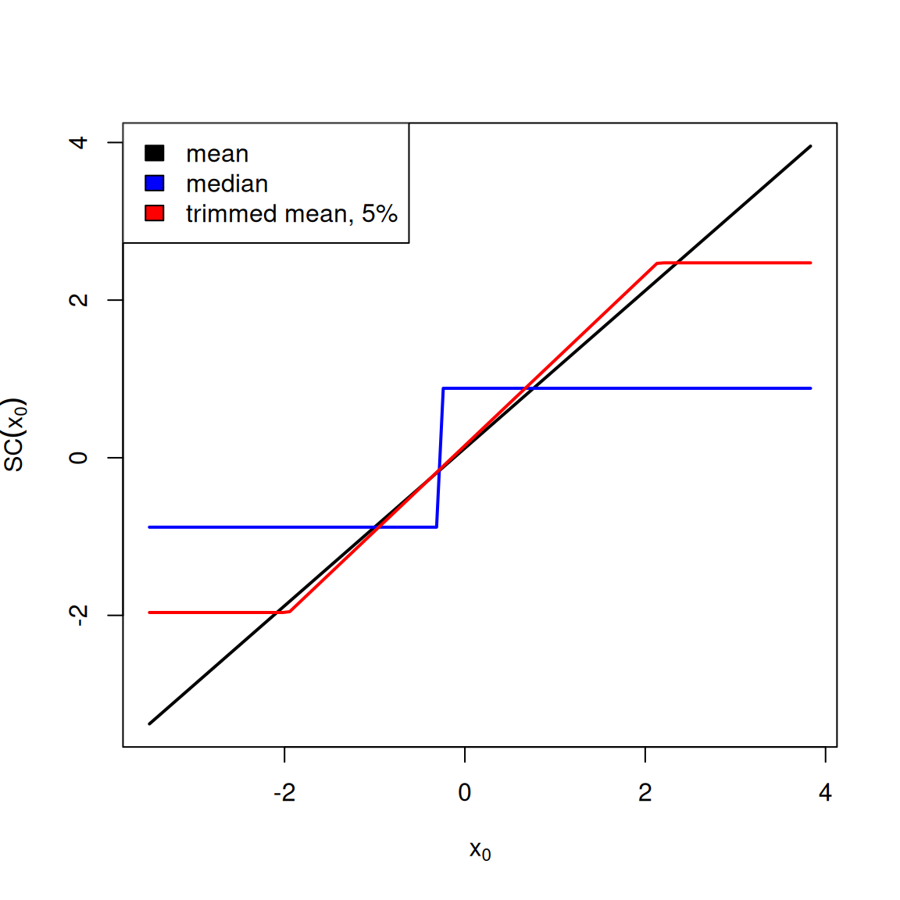
We can see that with the mean, which is linear in \(x_0\), we can change the estimate by an arbitrary amount by adding a single data point. For the other two estimates, the amount that they can be changed is bounded. Having a bounded sensitivity curve is a common robustness property that we look for.
Note
If you let \(n\rightarrow \infty\), then we can replace the specific values of the sample, and we are considering the full distribution of the data. Then the limit of sensitivity curve as \(n\rightarrow \infty\) is the influence curve, which is a fundamental notion in statistics about how an estimator changes due to perturbations to the underlying distribution of the data.
Calculating the \(SC(\hat\mu)\) explicitly for the trimmed mean
In our above plots, I had the computer calculated \(SC(x_0)\) for a sequence of \(x_0\), based on using my highway mileage data. But in fact, I can calculate an analytical expression for \(SC(x_0)\) for the trimmed mean just like I did for the mean, \[SC(x_0)=\begin{cases} \bar{x}_n +x_{(g)} & x_0 \le x_{(g)}\\ \bar{x}_n +x_0 & x_{(g)} < x_0 < x_{(n-g+1)}\\ \bar{x}_n +x_{(n-g+2)} & x_0 \ge x_{(n-g+1)} \end{cases} \] where we have ordered our original data \(x_{(1)}<\ldots<x_{(n)}\). So we see that regardless of the dataset, we get the piecewise function we saw above: one that plateaus out at exactly \(\bar{x}_n +x_{(g)}\) and \(\bar{x}_n +x_{(n-g+1)}\) on each end.
So while the vertical position of our \(SC(x_0)\) curve depends on our data (through \(\bar{x}_n\)) and the specific points where we plateau, the basic shape of the curve is independent of our data and particularly whether it is bounded. So it makes sense to talk about \(SC(x_0)\) as a property of the estimator and not specific to the particular dataset.
Proof. Consider what happens if we have the trimmed mean with \(\eta\) proportion removed from each end. Let’s assume we order our data: \(x_{(1)}<\ldots<x_{(n)}\), and we’ll assume that removing \(\eta\) proportion corresponds to \(g\) points being removed from each end. So our trimmed mean is the mean of the points: \[x_{(g+1)},\ldots,x_{(n-g)}\]
When we add \(x_0\), we will assume that \(\eta\) proportion still results in \(g\) points being removed from each end1, so we will be taking the mean of one additional point compared to our original data. Let’s say our additional point we add to this core interior set is \(x^*\). We know from above, that the difference of the mean with and without that point is \[\frac{1}{n+1}\bar{x}_n +\frac{x^*}{n+1}\] so the main question is what will \(x^*\) be for different values of \(x_0\)?
\(x_{(g)} < x_0 < x_{(n-g+1)},\) so \(x^*=x_0\) is part of the new core set of points, \[$x_0, x_{(g+1)}, \dots, x_{(n-g)},\] i.e. \(x_0\) is added. Then we know that the mean will change linearly with the value of \(x_0\) and \[SC(x_0)=\bar{x}_n +x_0\]
\(x_0 \le x_{(g)}\). That means \(x_0\) is now part of the bottom portion of the data we remove, and the previous boundary point \(x_{(g)}\) gets kicked into core set of data points, meaning we take the mean of \[x_{(g)}, x_{(g+1)}, \dots, x_{(n-g)},\] so we have \[SC(x_0)=\bar{x}_n +x_{(g)}.\]
\(x_0 \ge x_{(n-g+1)}\) That means \(x_0\) is now part of the upper portion of the data we remove, and the previous boundary point \(x_{(n-g+1)}\) gets kicked into core set of data points, meaning we take the mean of \[x_{(g+1)}, \dots, x_{(n-g)}, x_{(n-g+1)}\] and we have \[SC(x_0)=\bar{x}_n +x_{(n-g+2)}.\] \(\blacksquare\)
Break down point
We’ve focused so far on changing a single data point. But what if there are larger amounts of contamination? Depending on how these contaminates are distributed in your data, it can be harder to detect them by a 1-at-a-time evaluation. For example, if they themselves cluster together, removing one of them might not have an impact on your estimator, because the other contaminants are still there, affecting the estimator. This is a common problem in relying on outlier detection to handle problems with assumptions – if your estimator isn’t robust, you might not be able to find them.
One measure we can consider instead is how robust an estimator is to a certain percentage of the data being changed. We quantify this with the breakdown point of an estimator \(\hat\theta\). Imagine that your adversay changes \(m\) points to a set of values \(x_0\) (\(x_0\) is now a vector) that they want and you recalculate the estimator; let’s call it \(\tilde\theta_m(x_0)\). Then we consider the worst effect that can possibly be, in terms of changing \(\hat\theta\), \[max_{x_0\in R^m} |\hat\theta- \tilde\theta(x_0)|\] Then the breakdown point is the proportion of the data, \(m/n\), that need to be changed so that this “worst effect” is \(\infty\).
Consider calculating this for our three estimators:
- For the mean, we’ve already seen that we can change a single point and make the change in the estimator be arbitrarily large. So the breakdown point of the mean is \(1/n\rightarrow 0\).
- For a trimmed mean, we’ve seen that the sensitivity curve is bounded, meaning changing a single point can only change it by a fixed amount, no matter how extreme of a value of \(x_0\) you replace/add. So we need to change more data to make the change to the estimator arbitrarily large. In fact, you can add extreme values, up to \(\eta\) proportion of the data, and since they will be trimmed away, no matter how large they are they will not push the difference with the original estimator to infinity. You have to add enough new points to get at least one of them into the calculation of the mean – once you’ve done that, you set the \(x_0\) sufficiently large and the trimmed mean will follow. So the breakdown point is \(\eta\), the proportion you trim away from either side.
- For the median, the same argument applies, but to the extreme. You have to change at least half of the data, so the breakdown point is \(0.5\).
Evaluating assumptions
We now return to the other strategy for dealing with assumptions– evaluating whether the assumptions are reasonable on the dataset in question. The most common assumption we might evaluate are assumptions that our data follow a particular distribution.
Testing the assumptions
One way to evaluate the robustness of an estimator is to consider the assumptions required for the theoretical distributional properties to be true. For example, to know that \(\bar{X}\) and \(S^2\) are consistent for the parameters they estimate, we only relied on the WLLN, which doesn’t make specific distributional requirements on our data; similarly the CLT gives us asymptotic normality. Putting those two together, our CI for \(\bar{X}\) has pretty minimal assumptions if we have large sample sizes.
On the other hand, if we are only relying on the properties of MLE, those theorems do rely on the distributional assumptions of the data, particularly for the asymptotic variance to be accurate.
Another way we can explore the robustness of our estimators to their distributional assumptions is via simulation. We can simulate data from a different distribution, and consider what is the impact on the performance of our estimates or confidence intervals. This can be done for a finite \(n\), or for many choices of \(n\), to see specifically how.
For example, we have said that the CLT will need a larger sample size if our data comes from a skewed distribution. If we wanted to evaluate this by simulation, a common example would be to use data generated from, for example, an exponential distribution which is quite skewed, compared to a uniform, which is very definitely not normal, but is symmetric.
| Distribution | n | Coverage (z) | Coverage (t) |
|---|---|---|---|
| Exponential | 5 | 0.812 | 0.884 |
| Exponential | 10 | 0.872 | 0.907 |
| Exponential | 20 | 0.911 | 0.924 |
| Exponential | 30 | 0.916 | 0.926 |
| Exponential | 50 | 0.936 | 0.941 |
| Exponential | 100 | 0.937 | 0.939 |
| Exponential | 200 | 0.946 | 0.947 |
| Exponential | 500 | 0.946 | 0.947 |
| Uniform | 5 | 0.876 | 0.938 |
| Uniform | 10 | 0.918 | 0.949 |
| Uniform | 20 | 0.931 | 0.947 |
| Uniform | 30 | 0.941 | 0.950 |
| Uniform | 50 | 0.944 | 0.949 |
| Uniform | 100 | 0.949 | 0.951 |
| Uniform | 200 | 0.948 | 0.949 |
| Uniform | 500 | 0.951 | 0.952 |
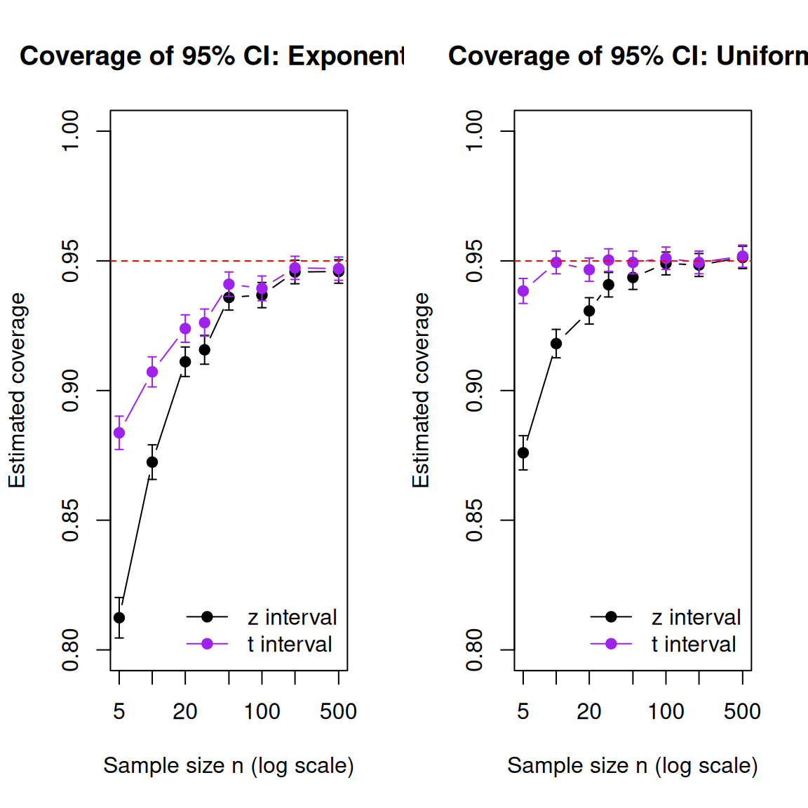
We see, indeed, skewed data need much larger sample size \(n\) for confidence intervals to have the appropriate coverage. For the exponential, the \(z\) interval covers only about 92% of the time at \(n = 30\), and only gets close to 95% around \(n = 200\). The “\(n > 30\)” rule doesn’t hold well for this strongly skewed data. But for the uniform, the \(z\) interval is within about a percentage point of 95% by \(n = 30\) – still not perfect but not nearly as far away.
Using \(t_{0.025,\,n-1}\) instead of \(1.96\) makes the interval wider, which by definition raises coverage at small \(n\) for both distributions. For the symmetric uniform, the \(t\) interval is close to 95% from \(n = 10\) onwards, and about 94% even at \(n = 5\), showing that when you pair the \(t\) quantile with small sample sizes, you can get more valid intervals even though the normal distribution assumption that underlies it is not true. For the exponential, \(t\) quantiles improve coverage as well, but ultimately don’t make large changes in the larger sample sizes that are needed.
We can plot the histograms of the sampling distribution of \(\bar{X}\) based on our simulation, with the normal approximation from the CLT overlayed in red.
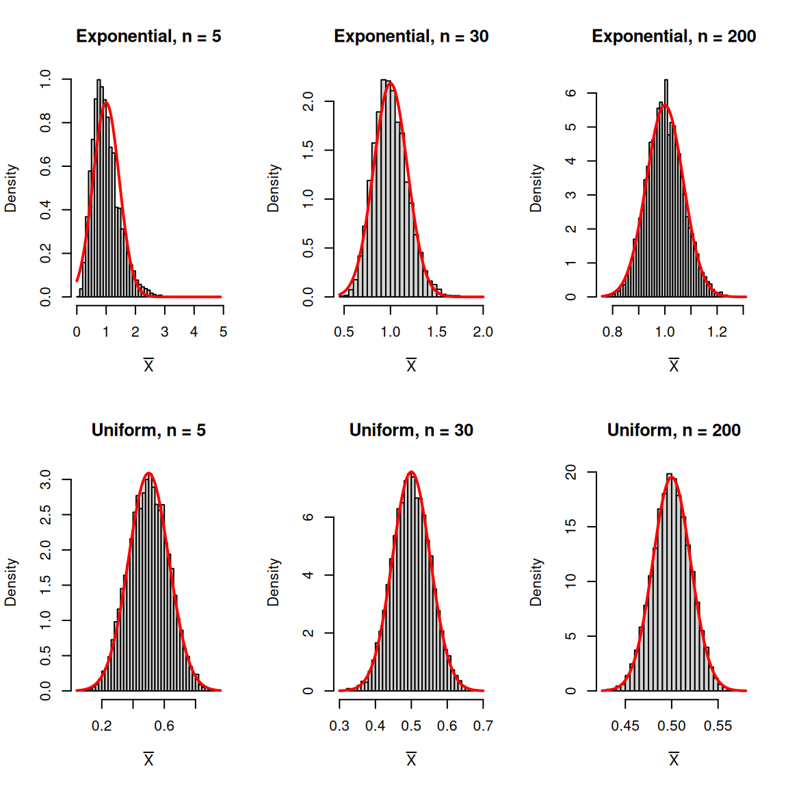
QQ-plots
The above type of exploration is generic, in the sense that it is trying to explore an estimator in general. We can also ask for our specific data: does it look normal or skewed? Does it have outliers?
To do this, we ask whether the empirical distribution of our data, \(\hat{F}\) is “close” to a known distribution, usually the normal. We’ve already seen the empirical distribution as an approximation of our true data distribution when we discussed the rationale of the bootstrap. Now we are using it to evaluate whether the unknown distribution might equal to a specific unknown distribution.
A natural way that people instinctively would compare distributions is like we did above: plot the histogram and overlay the distribution. In fact, this is not a very sensitive assessment. A histogram focuses on where the mass of the data is, but problems usually show up in the tails of the data, where you can’t really see very well – particularly if you only have a modest sample size.
Instead, a far more sensitive plot for comparing to distributions is a QQ-plot (a “Quantile-Quantile plot”). The idea behind the QQ-plot is to compare the the quantiles you would expect versus those from your data.
We’ve already seen with the bootstrap that we can find the empirical quantiles of a bootstrap sample – basically the value where a proportion of observations are below that value. The idea is the same when we apply it to a dataset – find \(\hat{q}_\alpha\) to be the point where \(\alpha\) proportion of the data is below that point.
Pick a series of \(\alpha\) probability values.
In particular, for a dataset of size \(n\) the \(k/(n+1)\) quantile is the \(k\)th largest value \(X_{(k)}\), so we generally set \(\alpha=k/(n+1)\).
Find the empirical quantiles \(\hat{q}_\alpha\) from the data
Calculate the theoretical quantiles \(q_\alpha\) from the distribution – usually a normal
Plot the two against each other
(optional) Draw a line describing where the points should lie if the quantiles matched exactly.
Here is the example of qqplots for data simulated for four different distributions (Normal, Beta, \(t\), and exponential):
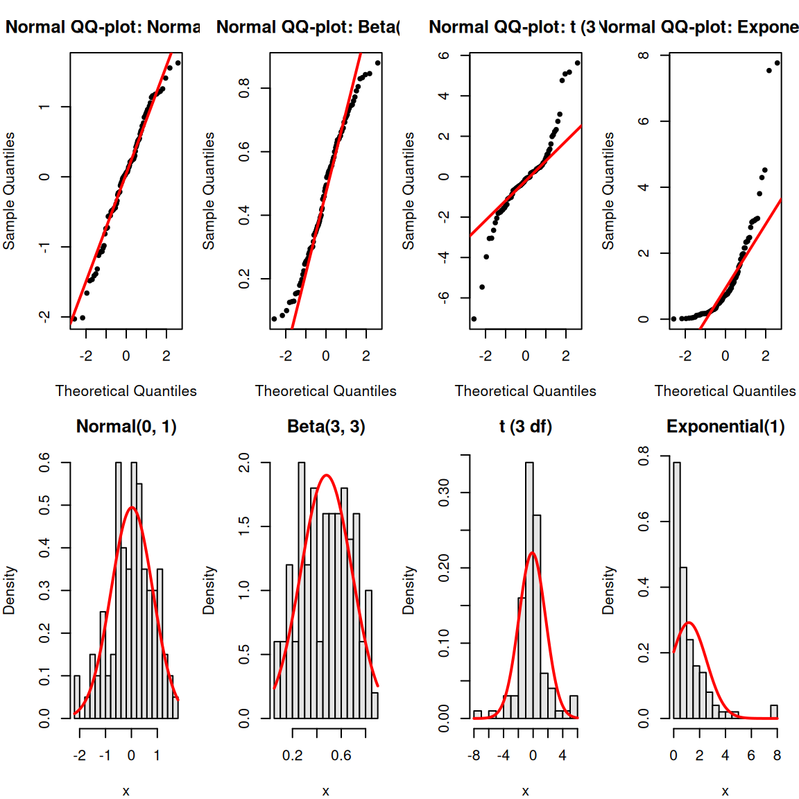
A few things to notice in how to interpret these plots:
- None of the qq-plots, even the truly normal data, lie exactly on the line. These are only estimates, so they will have noise.
- When the points are above the line then the estimated quantiles they are larger than expected.
- For the right side of the plot this means that the data is more spread out from the center of the distribution on the right side of the distribution (i.e. heavy right tails)
- For the left side of the plot, this means that the data are less spread out from the center of the distribution on the left side of the distribution (i.e. light left tails)
- When the points are below the line then the reverse is true:
- For the right side of the plot this means that the data is less spread out from the center of the distribution on the right side of the distribution (i.e. light right tails)
- For the left side of the plot, this means that the data are more spread out from the center of the distribution on the left side of the distribution (i.e. heavy left tails)
Putting this together, we can see that
- Data that are symmetric but with either heavier or lighter tails than the normal will have a “S” or “Z” shape
- [like the Beta]
- [like the \(t\)]
- Data that are skewed either right or left will have a “C” or “U” shape.
- If points are above the line on both sides, then you have a skewed distribution with a heavy right tail [like the exponential]
- If points are below the line on both sides, then you have a skewed distribution with a heavy left tail
Returning to the point regarding variability, it can be helpful to see what random variability looks like by plotting simulated normal data – i.e. where we know the data is actually normally distributed:
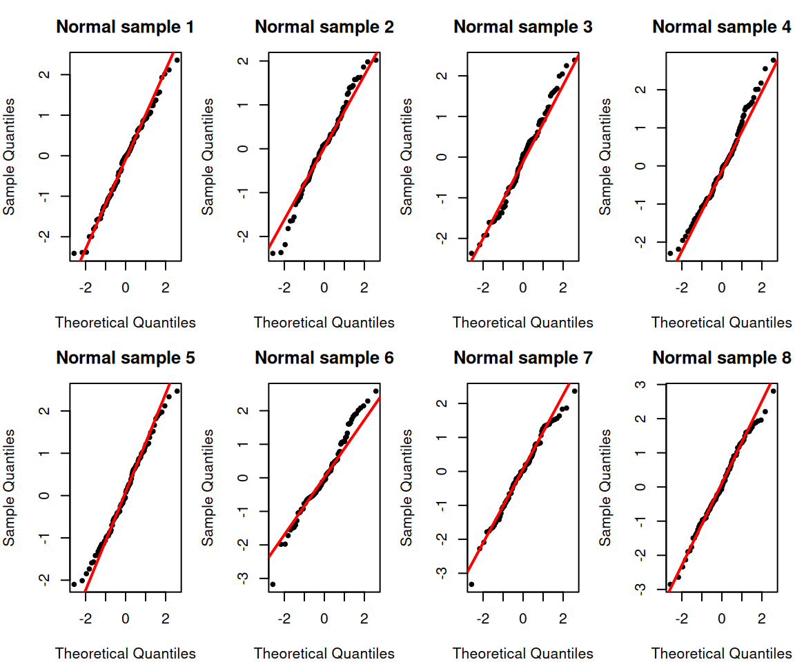
Let’s look at some real data, our highway mileage data:
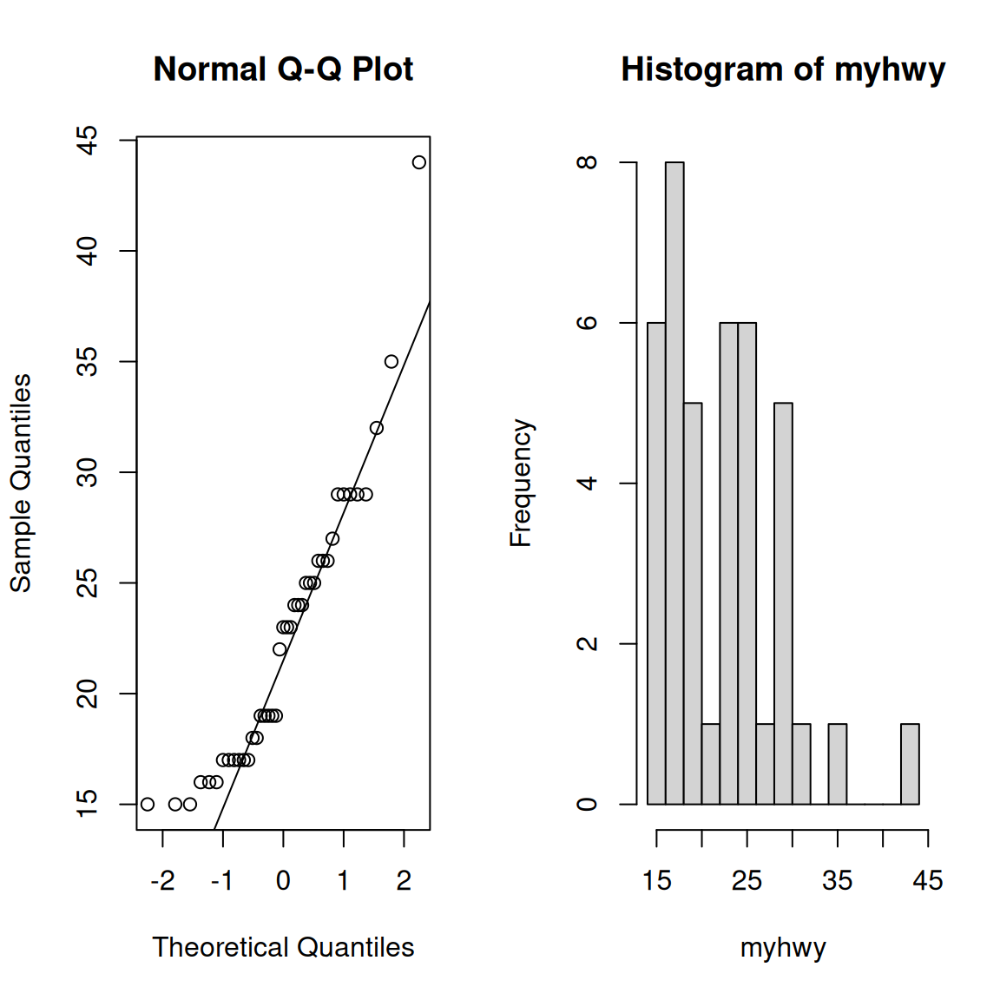
Notice how we can see our outlier on the qq-plot. This is common – outliers frequently show up on qq-plots.
What we also see, however, is that the lower part of the distribution also seems to be less spread out than we might expect from normal data, which is not obvious from the histogram.
Regression example
What about our regression data? It’s a bit more complicated here because while our common assumption is that our data \(Y_i\) is normal, each \(Y_i\) has a different mean. So we cannot compare \(Y_i\) to a normal distribution.
Instead, we look at the residuals \[Y_i-\hat{Y}_i= Y_i-(\hat\beta_0+\hat\beta_1 X_i)\] In this way, we have subtracted out our estimate of the mean for each point; we hope that the residuals, unlike the \(Y_i\) should be normally distributed.2
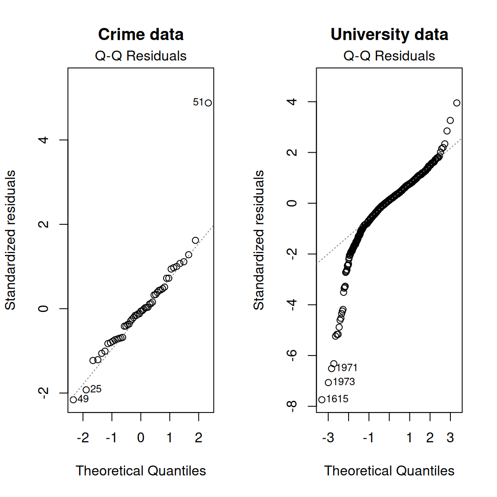
When we do this, we see the outlier in our crime data showing up. But we also see that the residuals from the university data does not look particularly normal – the residuals have much heavier tails than expected for a normal distribution. This is likely do to the fact that that we noted earlier – the variance of this data does not look the same for different values of \(x_i\). This means a large chunks of the data (those with large \(x_i\) and large “fitted” values) have much smaller residuals than the other half of the data; this likely results in much higher spread of our residuals than we would expect, hence the heavy tails.
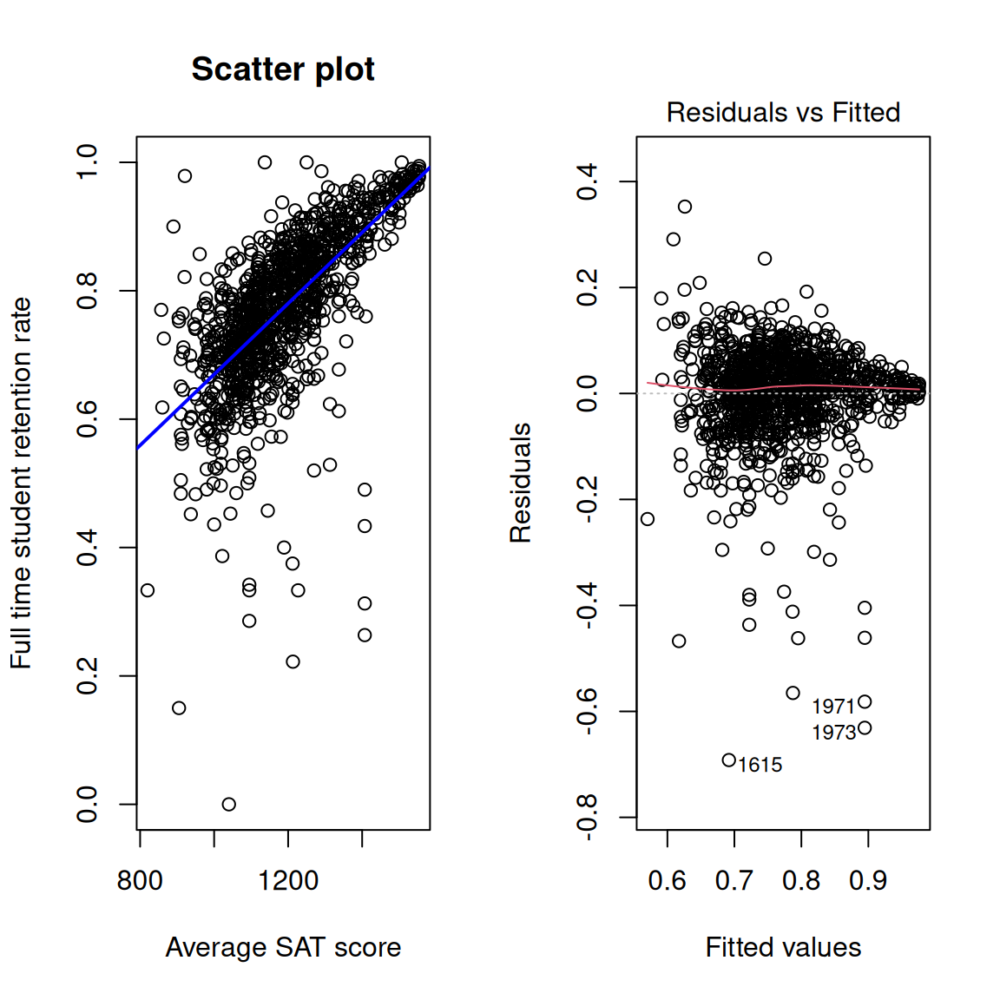
Notice how we started out wanting to assess normality of our data, and we’ve ended up diagnosing specific aspects of the data: non-constant variance and the presence of outliers. These are reasons for why the data does not look i.i.d. normal that are perhaps not what we intuitively think of when think about why our data isn’t normal, but are common sources of non-normality.
References
Agresti, Alan, and Maria Kateri. 2021. Foundations of Statistics for Data Scientists. Chapman; Hall/CRC.
Rice, John A. 2006. Mathematical Statistics and Data Analysis. 3rd ed. Duxbury Press.
Footnotes
We can consider the case where we have to increase the number of points removed at each end to \(g+1\), but the basic argument stays the same↩︎
To be accurate, the residuals are not actually independent nor do they have the same variance (so not i.i.d.). We can corrected our estimate of the residual to get “standardized” residuals that are expected to all have the same variance, but the standardized residuals are still correlated.↩︎